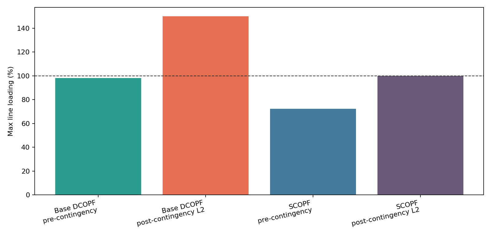

End-to-end DC PF, PTDF/LODF, DCOPF, N-1 screening and preventive SCOPF pipeline.
This report studies a custom 5-bus lossless DC power-system model on a 100 MVA base. The objective is to connect the main operational tools from the course in one reproducible workflow: construction of the bus susceptance matrix, DC power flow, PTDF and LODF sensitivity analysis, economic dispatch through DCOPF, N-1 contingency screening, and preventive security-constrained redispatch. The network is small, but it is large enough to show the central operating trade-off: the cheapest dispatch is not necessarily secure after a credible line outage.
The cyber-physical interpretation is important for this project. A contingency is not treated only as a random equipment failure; it can also represent an intentional line trip caused by relay manipulation, breaker misoperation, or coordinated cyber-physical action. For that reason, the report compares the normal base DCOPF dispatch with a preventive SCOPF dispatch and quantifies the cost paid to reduce exposure to the selected worst outage.
| Bus | Theta rad |
|---|---|
| 1 | 0.0440 |
| 2 | -0.0288 |
| 3 | 0.0176 |
| 4 | 0.0000 |
| 5 | -0.0503 |
| Line | Direct MW | PTDF MW |
|---|---|---|
| L1 | 77.4161 | 77.4161 |
| L2 | 32.5839 | 32.5839 |
| L3 | -25.6049 | -25.6049 |
| L4 | 14.3951 | 14.3951 |
| L5 | 46.9790 | 46.9790 |
| L6 | 13.0210 | 13.0210 |
Maximum DC PF vs PTDF flow error: 0.00000000 MW.
Slack PTDF column equals zero: True.
| Bus 1 | Bus 2 | Bus 3 | Bus 4 | Bus 5 | |
|---|---|---|---|---|---|
| L1 | 0.3626 | -0.3850 | -0.1550 | 0.0000 | -0.1514 |
| L2 | 0.6374 | 0.3850 | 0.1550 | 0.0000 | 0.1514 |
| L3 | 0.1715 | 0.2909 | -0.2855 | 0.0000 | 0.1145 |
| L4 | 0.1715 | 0.2909 | 0.7145 | 0.0000 | 0.1145 |
| L5 | -0.1911 | -0.3241 | -0.1305 | 0.0000 | -0.7341 |
| L6 | 0.1911 | 0.3241 | 0.1305 | 0.0000 | -0.2659 |
Base dispatch: {1: 150.0, 2: 0.0, 3: 0.0} MW.
Base LMPs: ['12.40', '12.40', '12.40', '12.40', '12.40'] USD/MWh.
Binding base lines: [].
| Line | Flow MW | Rating MW | Loading % |
|---|---|---|---|
| L1 | 98.12 | 100.00 | 98.12 |
| L2 | 51.88 | 100.00 | 51.88 |
| L3 | -7.32 | 70.00 | 10.46 |
| L4 | -7.32 | 90.00 | 8.14 |
| L5 | 44.56 | 80.00 | 55.70 |
| L6 | 15.44 | 60.00 | 25.74 |
With engineered congestion L2 = 30 MW, dispatch becomes
{1: 104.64388760868304, 2: 45.35611239131693, 3: 0.0} MW and cost is
2322.63 USD/h.
Congested LMPs are
['12.40', '17.74', '22.60', '25.88', '22.68'] USD/MWh.
The L2 binding-constraint dual variable is
21.14 USD/MWh.
The highest-LMP buses are expensive; the lowest-LMP buses are cheap.
| Line | Flow MW | Rating MW | Loading % |
|---|---|---|---|
| L1 | 74.64 | 100.00 | 74.64 |
| L2 | 30.00 | 30.00 | 100.00 |
| L3 | -28.05 | 70.00 | 40.08 |
| L4 | 17.30 | 90.00 | 19.23 |
| L5 | 47.30 | 80.00 | 59.13 |
| L6 | 12.70 | 60.00 | 21.16 |
Explicit LODF value L_L3,L1 = -0.4730.
All diagonal values satisfy L_k,k = 1: True.
| L1 | L2 | L3 | L4 | L5 | L6 | |
|---|---|---|---|---|---|---|
| L1 | 1.0000 | 1.0000 | -0.5429 | -0.5429 | 0.5695 | -0.5695 |
| L2 | 1.0000 | 1.0000 | 0.5429 | 0.5429 | -0.5695 | 0.5695 |
| L3 | -0.4730 | 0.4730 | 1.0000 | -1.0000 | -0.4305 | 0.4305 |
| L4 | -0.4730 | 0.4730 | -1.0000 | 1.0000 | -0.4305 | 0.4305 |
| L5 | 0.5270 | -0.5270 | -0.4571 | -0.4571 | 1.0000 | 1.0000 |
| L6 | -0.5270 | 0.5270 | 0.4571 | 0.4571 | 1.0000 | 1.0000 |
| Outage | Max loading % | Worst line | Overloaded |
|---|---|---|---|
| L1 | 150.00 | L2 | True |
| L2 | 150.00 | L1 | True |
| L3 | 102.10 | L1 | True |
| L4 | 102.10 | L1 | True |
| L5 | 123.50 | L1 | True |
| L6 | 89.32 | L1 | False |
| Line | LODF MW | Direct MW | Abs error MW |
|---|---|---|---|
| L1 | 150.000000 | 150.000000 | 0.000000 |
| L3 | 17.217391 | 17.217391 | 0.000000 |
| L4 | 17.217391 | 17.217391 | 0.000000 |
| L5 | 17.217391 | 17.217391 | 0.000000 |
| L6 | 42.782609 | 42.782609 | 0.000000 |
A plausible event is a relay misconfiguration or breaker operation that trips L2 during a coordinated cyber-physical incident.
SCOPF enforced contingencies: [2].
SCOPF LMPs: ['12.40', '22.60', '22.60', '22.60', '22.60'] USD/MWh.
| Generator | Base DCOPF MW | SCOPF MW | Move MW |
|---|---|---|---|
| G1 | 150.0000 | 100.0000 | -50.0000 |
| G2 | 0.0000 | 50.0000 | 50.0000 |
| G3 | 0.0000 | 0.0000 | 0.0000 |
| Line | Flow MW | Rating MW | Loading % |
|---|---|---|---|
| L1 | 72.24 | 100.00 | 72.24 |
| L2 | 27.76 | 100.00 | 27.76 |
| L3 | -30.18 | 70.00 | 43.11 |
| L4 | 19.82 | 90.00 | 22.03 |
| L5 | 47.58 | 80.00 | 59.48 |
| L6 | 12.42 | 60.00 | 20.69 |
Cost of security: 510.00 USD/h (27.42% of base DCOPF cost). Post-contingency SCOPF max loading: 100.00%.
| Line | Post flow MW | Rating MW | Loading % | Overloaded |
|---|---|---|---|---|
| L1 | 100.00 | 100.00 | 100.00 | False |
| L3 | -17.04 | 70.00 | 24.35 | False |
| L4 | 32.96 | 90.00 | 36.62 | False |
| L5 | 32.96 | 80.00 | 41.20 | False |
| L6 | 27.04 | 60.00 | 45.07 | False |
| Dispatch | Scenario | Max loading % | Cost USD/h |
|---|---|---|---|
| Base DCOPF | pre-contingency | 98.12 | 1860.00 |
| Base DCOPF | post-contingency L2 | 150.00 | 1860.00 |
| SCOPF | pre-contingency | 72.24 | 2370.00 |
| SCOPF | post-contingency L2 | 100.00 | 2370.00 |

The base DCOPF is economical at 1860.00 USD/h and reaches 98.12% maximum loading before an outage, but under L2 it rises to 150.00% and is insecure. SCOPF costs 2370.00 USD/h, so it pays Delta C = 510.00 USD/h (27.42%) every hour. In exchange, the selected post-contingency loading is capped at 100.00% instead of exposing the system to the overload.
The Ukraine 2015 power-grid attack is a documented example where attackers used remote access to distribution-control environments, opened breakers, disrupted operator visibility, and delayed restoration. The later Industroyer/CrashOverride incident in 2016 further showed that grid-specific malware can target substation switching operations rather than only business IT. In this setting, a line outage is not just a low-probability random fault; it can be the adversary's chosen action. That changes the dispatch decision: the operator may rationally accept the SCOPF premium when the insecure base dispatch creates an obvious post-contingency overload target.
The numerical output is generated by scripts/run_project.py. Toolchain:
Python 3.12.13, NumPy 2.4.6, SciPy 1.17.1,
solver scipy.optimize.linprog(method='highs').
Use of generative AI tools is disclosed for implementation assistance. Numerical values are produced by the project code.
The results show the expected tension between economic efficiency and preventive security. In the base DCOPF, the system chooses the cheapest available generation and reaches a total operating cost of 1860.00 USD/h. This dispatch is valid in the pre-contingency network, but the N-1 screening reveals that the outage of L2 would create a maximum surviving-line loading of 150.00%. In other words, the base dispatch is economically attractive but operationally exposed once the worst single-line contingency is applied.
The SCOPF redispatch moves generation away from the purely economic optimum and raises the operating cost to 2370.00 USD/h. The resulting cost of security is therefore 510.00 USD/h, or 27.42% of the base DCOPF cost. That premium is not wasted capacity; it buys a measurable resilience property. Under the selected contingency, the SCOPF dispatch keeps all surviving monitored lines within their ratings, with the maximum loading reduced to 100.00%.
From the cyber-physical perspective, this is the key lesson of the exercise. If line outages are only random failures, an operator might be tempted to run the cheaper base dispatch and accept the risk. If outages can be adversarial, the exposed post-contingency overload becomes a target that can be deliberately selected. The preventive SCOPF case gives the operator a concrete price for reducing that exposure, making the security decision explicit rather than implicit.